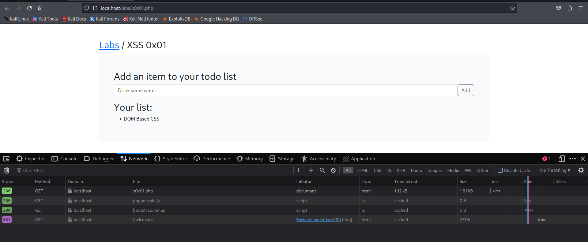

This is DOM based cross site scripting Cuz what happens is, if we look at the network tab here we just reload the page quickly.
When we actually send information we can see that there is no request going and coming back to the server.
As this is entirely happening locally and it's vulnerability within the client this is DOM based CSS.

<script> prompt(1) </script>
but when we hit enter nothing happen's as there is no triggering effect that will call it so will try another script

<img src=x onerror="prompt(1)">
is a quite common payload when the document tries to load X it will throw an error and on the error we can execute some JS.
Re-direct the user to another website
Command : window.location.href
<img src=x onerror="window.location.href ='' ">